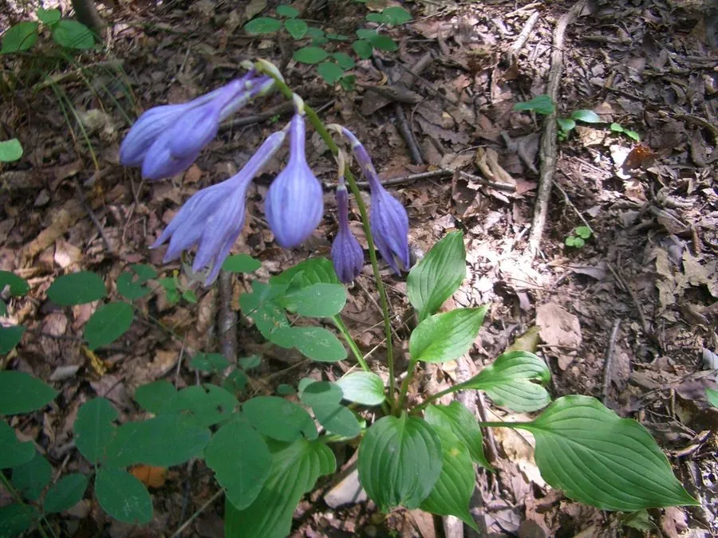

花卉与草本 · 植物界
紫萼 Hosta ventricosa

天门冬科多年生草本，夏季开淡紫色漏斗状花，叶片宽大，耐阴湿，是林下与庭院常见的观叶观花植物。
- 分类
- 门被子植物门纲木兰纲目天门冬目科天门冬科属玉簪属
- 栖息环境
- 林下阴湿处、溪边与庭院，喜半阴湿润
- 地理分布
- 中国华东、华中至西南地区；各地庭院栽培
- 保护级别
- 暂无评估；中国未列入国家重点保护野生植物名录
物种志
紫萼为天门冬科玉簪属多年生草本，株高 30–60 厘米，地下具粗壮根状茎。叶片基生，卵形至卵圆形，宽大，表面深绿色，基部心形。花葶自叶丛抽出，总状花序着花 10 余朵，花冠漏斗状，淡紫色至紫红色，花期 6–7 月；果实为蒴果，果期 8–9 月。
紫萼原产中国华东、华中至西南地区，生于林下阴湿处，各地庭院栽培。它喜半阴湿润的环境，忌强光暴晒，耐寒性较强，适宜疏松肥沃、排水良好的土壤。叶片宽大、花色淡紫，耐阴湿，是林下与庭院常见的观叶观花植物；与玉簪相比，紫萼花朵呈淡紫色、叶片较窄。栽培以分株繁殖为主，需保持土壤湿润，夏季适当遮阴。
形态与习性
- 株高30–60 厘米，根状茎粗壮
- 花期6–7 月，花淡紫色
- 果期8–9 月，蒴果
- 光照喜半阴，忌强光暴晒
- 水分喜湿润，忌积水
- 土壤疏松肥沃、排水良好的土壤
- 主要用途林下观叶观花，庭院点缀
趣味知识
- 紫萼与玉簪同属，但紫萼的花是淡紫色，玉簪的花是白色。
- 它的叶片宽大、耐阴湿，适合种在树下和建筑北侧。
- 紫萼的花葶高出叶丛，开花时花序随风摇曳。
- 根状茎可入药，但需遵医嘱，不可自行采食。